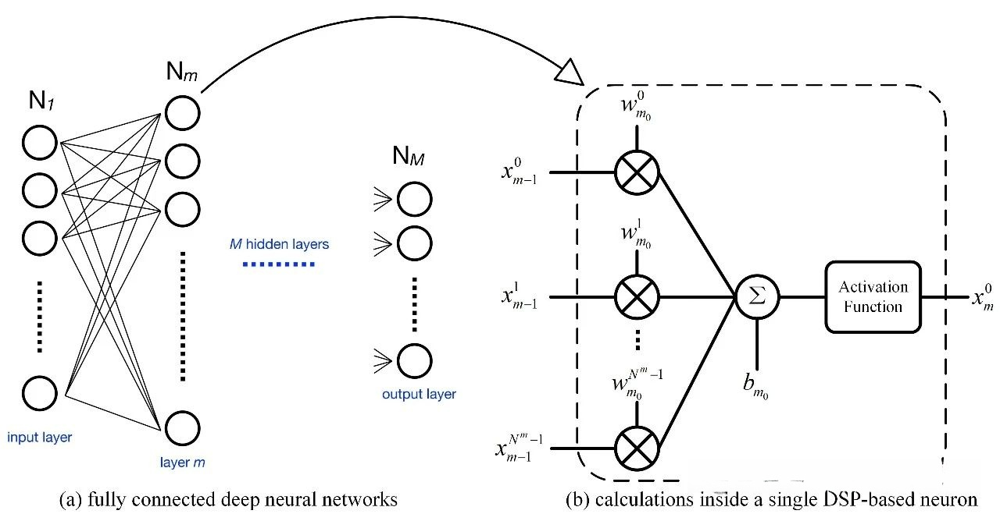
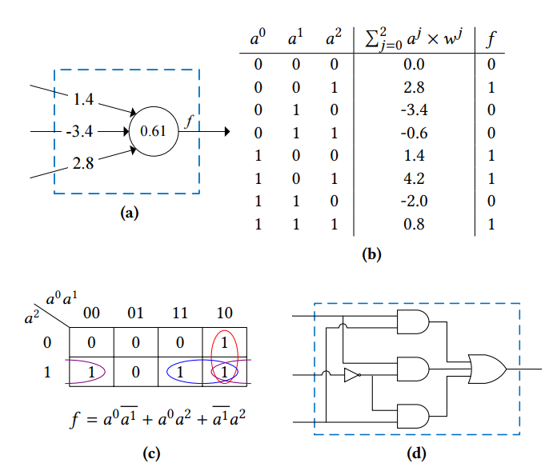

20250320进展汇报
 narutozxp
narutozxp
2025年3月20日
1 综合进展
1.1 yosys提取乘算子的具体实现
基于 spi_mult 的测试结果
为了充分利用ADDER宏模块
1.2 测试结果
| 类型 | CLB数量 | FLE数量 | ADDER数量 | FF数量 | CPD |
|---|---|---|---|---|---|
| raw | 35 | 256 | 6 | 66 | 21.4935 |
| yosys inner mult2dsp | 86 | 461 | 314 | 66 | 42.8063 |
| simple | 35 | 228 | 125 | 66 | 25.9454 |
| booth | 60 | 419 | 195 | 66 | 25.7731 |
| boothv2 | 33 | 243 | 74 | 66 | 20.9157 |
1.3 测试ADDER宏阈值
- 测试adder的threshold从0-60，找出效率最高的threshold
- 当前部分benckmark会将memory综合为带有使能的FF，仍然需要修改yosys映射规则
| benchmark | lut4 | adder | dpram8k | ff |
|---|---|---|---|---|
| arm_core | ||||
| bgm | ||||
| blob_merge | ||||
| boundtop | ||||
| ch_intrinsics | ||||
| diffeq1 | ||||
| diffeq2 | ||||
| LU8PEEng | ||||
| LU32PEEng | ||||
| LU64PEEng | ||||
| matmul_8x8_fp16 | ||||
| mcml | ||||
| mkDelayWorker32B | ||||
| mkPktMerge | ||||
| mkSMAdapter4B | ||||
| or1200 | ||||
| raygentop | ||||
| sha | ||||
| spree | ||||
| stereovision0 | ||||
| stereovision1 | ||||
| stereovision2 | ||||
| stereovision3 | ||||
| tpu.16x16.int8 | ||||
| tpu.32x32.int8 |
2 宏模块进展
2.1 MX格式调研
2.2 数据类型
支持的格式类型(其中FP类型都会有两种子类型)
| Name | Element Data type | d | k | Scale Data Type | w |
|---|---|---|---|---|---|
| MXFP8 | FP8 | 8 | 32 | E8M0 | 8 |
| MXFP6 | FP6 | 6 | 32 | E8M0 | 8 |
| MXFP4 | FP4 | 4 | 32 | E8M0 | 8 |
| MXINT8 | INT8 | 8 | 32 | E8M0 | 8 |
使用FP8和INT8构成systolic，融合FP8近似计算（尝试，非必需），构成DSP MACRO
3 基于LUT的模型实现
3.1 NullaNet


无需额外的sram用于存储Weights